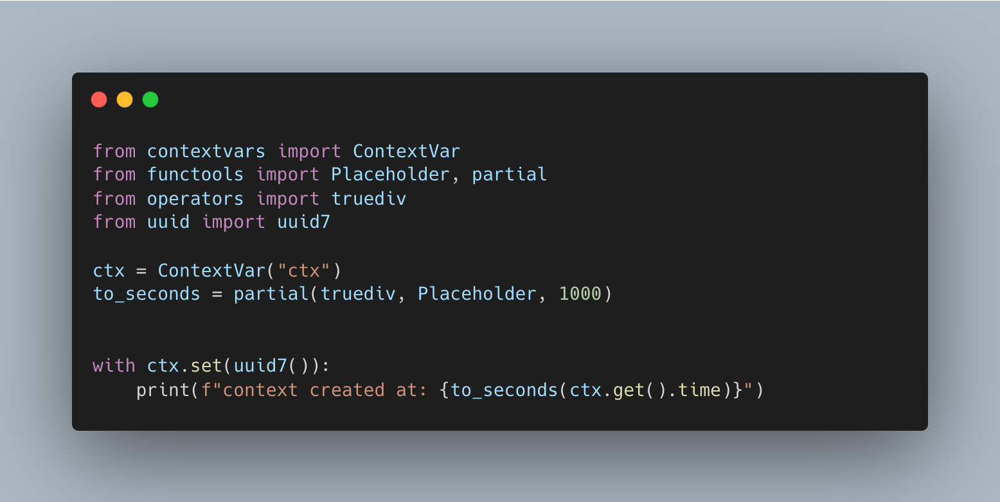

Python 3.14 is just around the corner and it's jampacked with huge updates:
But as with any release, there are many nice smaller and less noticeable features. Features you won't see unless you comb through the entire release notes. Luckily I am boring enough to do just that.

contextvars.Token is now a contextmanager
As Python embraces different forms of concurrency, contextvars has become extremely important.
A very common example is logging.
That being said, I've always found resetting ContextVars a bit of a pain, as the a token needs to be kept around.
A = ContextVar("A")
token = A.set("val")
... # other code
...
A.reset(token)
So much so I've written the below function many times:
@contextmanager
def auto_reset[T](context: ContextVar[T], token: Token[T]) -> Iterator[None]:
try:
yield
finally:
try:
context.reset(token)
except Exception:
...
def set_context[T](context: ContextVar[T], value: T) -> ContextManager[None]:
token = context.set(context.get() | kwargs)
return auto_reset(context, token)
with set_context(A, "val"):
...
The function sets a context and allows it to be reset by a context manager instead.
Well now you won't have to, in 3.14 Token is now a ContextManager:
A = ContextVar("A")
with A.set('val'):
...
The new code speaks for itself, it's much more concise and just makes sense.
functools.Placeholder
Suppose you have a function like this:
def div(a: int, b: int) -> int:
...
and want to create a partial function that always divides by a certain number:
div_by_2 = partial(b=2)
This actually can be typed checked as both mypy and pyright support partials as a special rule (example).
There are situations where partial couldn't work though, suppose our function doesn't take in keyword arguments:
def div(a: int, b: int, /) -> int:
...
This could be done with a lambda a: div(a, 2) but we lose typing information. Or we can create a named function but that can be quite verbose.
I have a rather complicated solution in better-functools for this exact scenario. But it pushes the limits of the current capabilities of typing in Python and I ended up resorting to specifying the types explicitly.
In Python 3.14 however this is completely possible with partial.Placeholder:
div_by_2 = partial(Placeholder, 2)
The placeholder simply marks any positional arguments we are not specifying yet.
Caveat: as far as I can tell, none of the type checkers have updated their rules yet. Given that partial itself works I think it's only a matter of time.
UUID v6 v7 and v8 are added to Python 3.14.
More specifically I'm very excited about v7.
As a rule, I use uuid4 as my primary keys in my database. This is because compared to auto-incrementing integer ids, the key generation process is a lot simpler and can be done either by the database server or at the client side. The randomness of the UUID is also a good security measure as nothing can be inferred by just knowing its value.
The problem? They cannot be used to sort.
It turns out having some ordering built into the ids can be extremely helpful. For most if not all of my tables, I end up with an extra increment id or timestamp to provide the order.
V4 ids when indexed by the database do not offer anything but lookup. But this is where uuid7 comes in, uuid7 has a time component builtin to it, and can be used to lexicographically sort in chronological order. This is all whilst still providing a good amount of randomness. The best of both worlds.
from uuid import uuid7
from datetime import UTC, datetime
uuid7() < uuid7() # uuid7 is ordered chronologically
u = uuid7()
u.time # time in ms since epoch
datetime.fromtimestamp(u.time / 1000, UTC)
V6 is similar in that it can be sorted chronologically, but it is less random than V7. In fact, in RFC 9562 it is explicitly stated that:
Implementations SHOULD utilize UUIDv7 instead of UUIDv1 and UUIDv6 if possible
Finally, version 8 is a standard that puts very few limits on the data inside the UUID, allowing vendors to create their own UUIDs based on custom standards. It is not something I personally have a use case for.